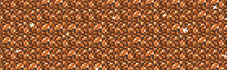
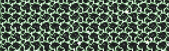
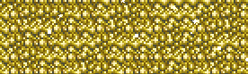
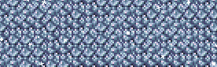
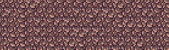
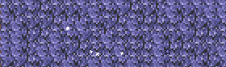
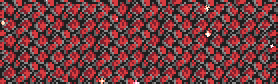
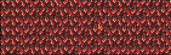

MINERALES
Los minerales son recursos fundamentales que se extraen del terreno y se usan para fabricar herramientas, armas, armaduras, bloques y objetos útiles. Aparecen en diferentes capas del mundo y su disponibilidad depende de la etapa del juego (pre-Hardmode o Hardmode) y, en algunos casos, de la generación aleatoria del mundo (donde ciertos minerales tienen alternativas).
COBRE
Mineral básico al inicio del juego. Se encuentra en la superficie y capas superiores. Se usa para fabricar las primeras herramientas, armas y la armadura de cobre. En algunos mundos es reemplazado por estaño.

TUNGSTENO
Mineral de nivel intermedio, alternativa a la plata. Aparece en capas subterráneas profundas. Mejor que la plata: da más defensa en armaduras y herramientas más duraderas. Requiere pico de hierro o mejor para extraerlo.

ORO
Mineral avanzado pre-Hardmode. Se halla en capas profundas, cerca del inframundo. Se usa para crear la armadura de oro (27 defensa) y armas potentes. En algunos mundos es sustituido por platino.

PLATINO
Alternativa superior al oro. Ofrece más defensa (30 con conjunto completo) y herramientas ligeramente mejores. Solo aparece en lugar del oro en ciertos mundos generados aleatoriamente.

METEORITO
Mineral especial que cae del cielo tras derrotar al Ojo de Cthulhu. Emite daño por fuego al tocarlo (a menos que uses protección). Se usa para la armadura de meteorito (ideal para arqueros) y armas como el Fusil de Piraña.

ENDEMONIO
Mineral de color púrpura que aparece en la Corrupción. Se obtiene al destruir Orbes de la Corrupción o al matar enemigos corruptos. Se usa para fabricar armas, armadura de sombras y para invocar al Gusano del Mundo.

CARMESÍ
Mineral rojo del bioma Carmesí, similar a la demonita. Se obtiene al destruir Corazones Carmesíes o al derrotar enemigos del Carmesí. Se usa para la armadura de carmesí y para invocar al Cerebro de Cthulhu.

PIEDRA INFERNAL
Mineral ígneo del Inframundo. Brilla en la oscuridad y causa daño al tocarlo (a menos que uses Poción de piel de obsidiana). Se funde en ladrillo de piedra fundida y se usa para la armadura fundida, la más fuerte pre-Hardmode.

Tabla Comparativa de Minerales Pre-Hardmode
| Mineral | Extracción | Ubicación | Mejor Uso | |
|---|---|---|---|---|
| Pico Requerido | Dureza | |||
| Cobre | Picaxe (cualquiera) | ⭐ Muy Suave | Superficie - Nivel 2 | Herramientas y Armas Iniciales |
| Estaño | Picaxe (cualquiera) | ⭐ Muy Suave | Alternativa Cobre | Herramientas Iniciales (Alt) |
| Hierro | Pico Cobre+ | ⭐⭐ Suave | Nivel 2-3 | Segunda Generación Armaduras |
| Plata | Pico Hierro+ | ⭐⭐ Suave | Nivel 3 | Tercera Generación (Alternativa) |
| Tungsteno | Pico Hierro+ | ⭐⭐ Suave | Alternativa Plata | Mejor que Plata |
| Oro | Pico Plata+ | ⭐⭐⭐ Medio | Nivel 4 Profundo | Cuarta Generación |
| Platino | Pico Plata+ | ⭐⭐⭐ Medio | Alternativa Oro | Mejor que Oro |
| Piedra Infernal | ⚠️ PELIGROSA - Requiere Obsidian Skin para no recibir daño | |||
| 💡 Tip: Algunos minerales tienen alternativas según el mundo generado. ¡Siempre hay caminos para progresar! | ||||